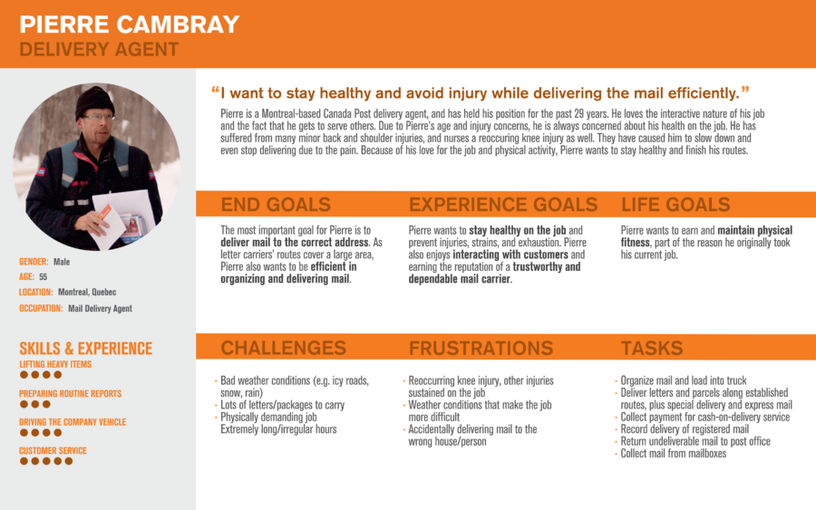

- Roles I Played: UI Designer, creating the final prototype, graphic designer, animator
- Tools Used: Illustrator, Axure, Photoshop, After Effects
- Award: Top 3 Finalist at theVancouver User Experience Awards 2014
- Team: Brendan Lane, Christie Wong, Patrick Magdua, Levona Yim
- Type: Academic Project
- Prototype:Here
Project:
For this project, we created an interface that allowed Canada Post mail carriers to complete their daily tasks in an efficient manner despite of the postal transformation system. With this system in place, their plan is to cut carriers to reduce costs while maintaining the same delivery efficiency expectations. As a result, mail carriers now have longer and more strenuous routes. In light of this, as a team we created Optimail.
PROCESS
Persona:
We created our persona Pierre Cambray to better understand the daily life of a mail carrier, what their tasks were, their goals, and their emotions and thoughts before, during, and after delivery mail.
Customer Experience Mapping:
The persona led us to develop an experience map that tied Cambray’s emotions and thoughts to specific components of the mail delivery process, clearly visualizing the high and low points of Cambray’s day.
- Flow Chart:
This flow chart represents our inital idea after interviewing mail carrier and our persona, Pierre Cambray.
- Initial Wireframes:
Our initial idea was an app that would take data from sorting mail machines and personal preferences to develop a daily personalized plan for carriers on the job. The plan’s focus is to alleviate the physical demand while maximizing delivery efficiency. Our wireframes demonstrate how the app would provide a customized plan and track the carrier’s progress throughout their day.

Here is our intial prototype based on the flow chart and our intial interviews with mail carriers. The app tracks the carrier’s progress by displaying a map highlighting their route and providing a progress report. At the end of the day, the report is automatically sent to the office when the carrier clocks out.
User Testing Results:We tested our initial prototype with 2 Canada Post mail carriers, a UPS delivery agent, and a Puralotor carrier. As a result, we realized, we realized the app would not be a effective nor effiecient for them since carriers have the firsthand knowledge of the area and need to constantly adapt to special circumstances that may occur. View our results.
Final Results:From the insight gained from testing our prototype, we shifted the focus of our app from providing a customized plan to relevant tools and information that the carrier can use in all their tasks. These tools allow mail carriers to quickly scan parcels, mailxboxes and bundles, use geolocation to track deliveries and be informed about weather changes, deliver parcels efficiently, and check progress with meaningful stats. The app allows mail carriers to make notes as well as notify them using audio cues if there is an alert or a package to deliver is nearby. Here is our final prototype.
My Final Thoughts
This project has taught me to be a better designer by thinking of low-on-the-tree ideas that can enhance a user's experience by adding value to a product. I have also learned to work with new tools on the spot by being the only person on the team to have Sketch and Principle. I was also able to play multiple hats and working within a tight schedule by being the UX/UI and Visual Designer. I made sure the UI was designed within brand and being inline with Rosetta Stone's current application. I was also the Interaction Designer by adding the interactions of the app through Principle, making sure each key interaction and element within the application has purpose and was a conscious decision.
Overall, every week we presented, I was the quality checker to make sure that "OK" was not enough. It needed to be the best in order to present to our class and any guests we had.